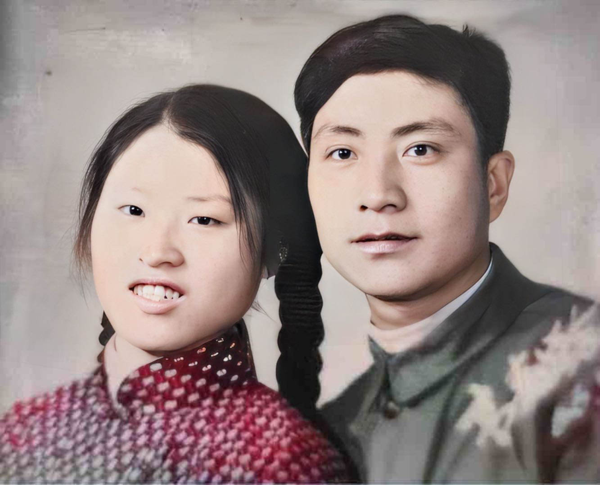

每个人家里可能都会有一些老照片，由于时间久远、保管不当而破损掉色。
今天为大家介绍一款修复软件: Restore Old Photos & colorize
这款软件可以帮助大家修复老照片，使照片变得更加清晰，重拾即将逝去的美好回忆。

软件下载页面
苹果系统可在app store中进行免费下载，安卓系统可点击http://photo-fix.shuiyin.cn/picture/indexen.html进行下载
下载完成后，用户可选择游客身份登录（guest login），无需注册直接使用，新用户可免费使用一次。

软件页面
免费次数用完后，可通过充值金币来继续使用（300枚/30RBMB），每次修复会花费20枚金币（约合2元/次）。

充值页面
接下来，让我们一起来看看它的修复效果。
下图为处理前照片，我们可以看到照片整体较为模糊。
处理前照片
接下来我们使用软件进行清晰处理
处理完的照片（下图）明显清晰了不少。
处理后照片
该软件还有图片上色功能
下图为上色前的原图
图片上色前
接下来我们使用软件对老图片进行上色，下图是上色后的图片。图片不但变得更加清晰，而且颜色变得生动鲜艳。
图片上色后
以上就是对于该软件的简介，希望可以帮到大家！